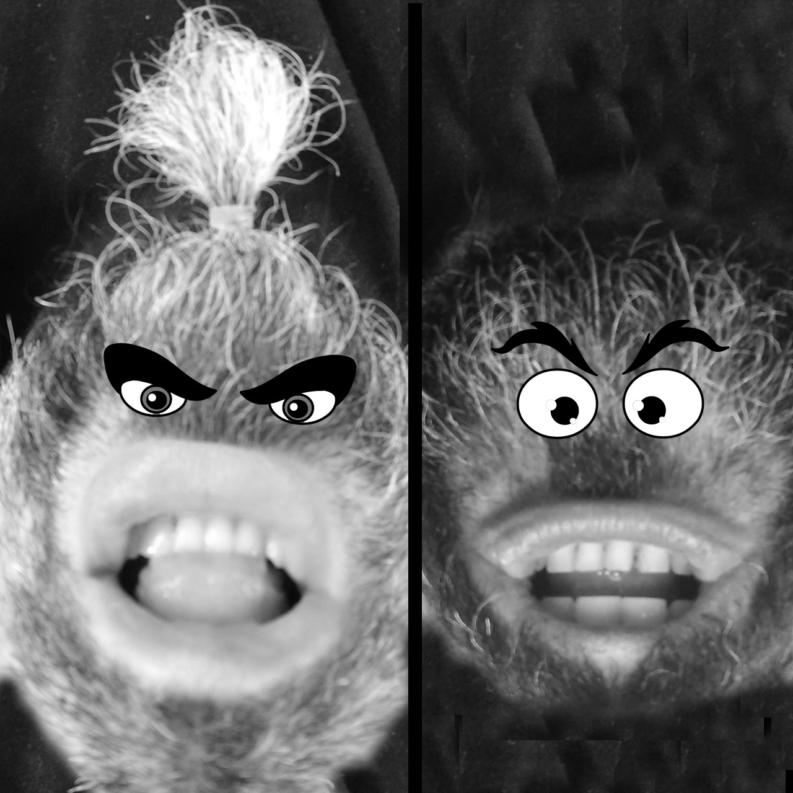
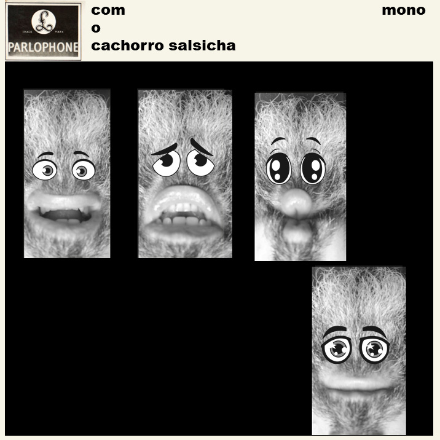

Em seu álbum de estréia, o Cachorro Salsicha filosofa durante a pandemia. Todas as músicas foram gravadas entre 16 de julho e 6 de agosto de 2020.
Reflexões do Cachorro Salsicha ao piano, traçando possíveis desdobramentos frente a pandemia, a ressignificação das coisas e os riscos a saúde mental.
40 segsAcompanhado de um ukulele, o Cachorro Salsicha elucubra sobre a resiliência como ferramenta eficiente durante o isolamento imposto pela pandemia.
1 min 1 segOs efeitos do isolamento social para os jovens que ficam no Discord enviando seus memes causará um apagão no ensino e problemas de difícil trato para educadores.
1 min 48 segsTal qual a imensa pedra rolada por Sisifo, o Planeta Terra luta contra o ciclo de curvas epidemiológicas, obscurantismo científico e lasanhas de frango.
1 min 15 segsSejamos pacientes e leves com nossas crianças durante a pandemia, por dias melhores e com maior compreensão e doçura, sejamos esperançosos contumazes.
50 segs
Uma atitude blase e insensível frente aos problemas do Mundo é o último refúgio daqueles que deixam de lado o enfrentamento das situações.
2 mins 24 segs
Em um mundo devastado pela pendemia, a grande questão não é saber se a conta chegará para cada ser humano que a vivenciou, mas sim quando.
1 min 21 segsNão é cachorro-pão, é cachorro-salsicha.